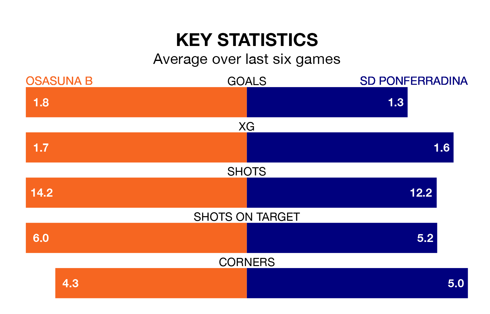

Osasuna B face a challenge to maintain their high-scoring form at home against a tight SD Ponferradina defence on Sunday.
With 29 goals in 21 games, Osasuna B are the joint-third-highest scorers in Primera Division RFEF Group 1 ahead of the 7pm kick-off at Instalaciones Deportivas de Tajonar.
They face a Ponferradina side who have scored 24 in 21 matches, but conceded only 14 goals, putting them third among the league's tightest defences – only Gimnàstic de Tarragona and Cultural y Deportiva Leonesa have conceded fewer goals.
Ponferradina are top of the table after 21 games, of which they have won 11 and drawn seven, earning 40 points.
Osasuna B are 10 places behind the away team in 11th, with seven wins and seven draws putting them on 28 points.
The hosts are in mixed form in Primera Division RFEF Group 1, with two wins and three draws from their last six games.
With three wins and two draws over that period, Ponferradina's form is slightly better – they have taken 11 points from 18, compared to Osasuna B's nine.
Osasuna B's last match was on January 28, a 1-1 draw against Gimnàstic de Tarragona, with Eneko Aguilar Elizalde getting the goal for Osasuna B.
Ponferradina drew 1-1 with Sestao River Club last time out, on January 27.
Updated: 10:03 (UTC), 30/01/24